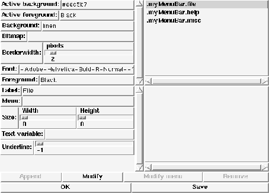

This template defines three new procedures named TextBox, TextBoxFd and TextBoxFile. Calling this procedures pops up a dialog box to display several lines of text in a text widget. These boxes can be modal or not. If the dialog box is modal, the procedure returns the number of the pressed button. Otherwise the specified command is evaluated. The displayed text, a filename or an open file descriptor can be passed on. The procedure gets the following parameters:
To configure the different aspects of the text box, there exists a global array named textBox. A default value of ``-'' means that the Tk default value is used. This array contains elements that control the text box (color, font etc.):
Array element & Default & Purpose
A small example of an invocation may look like this:
TextBox ''Text message''
This would create the following dialog box:

Figure: The template TextBox